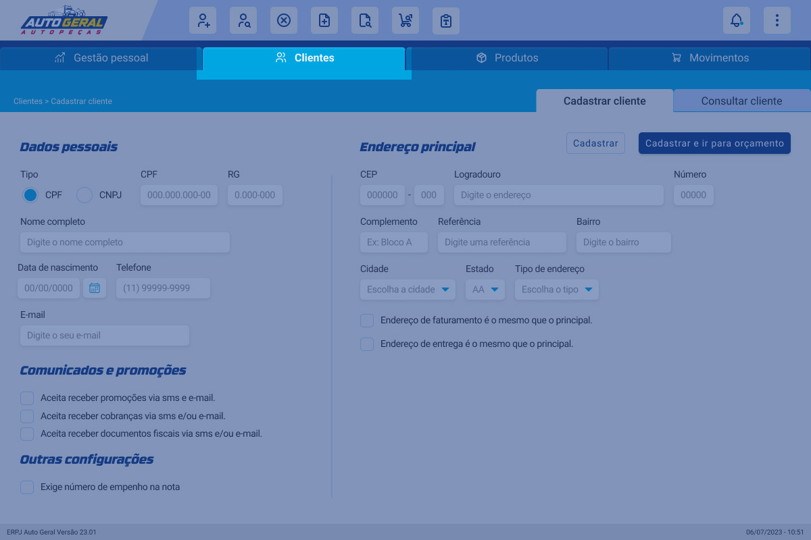
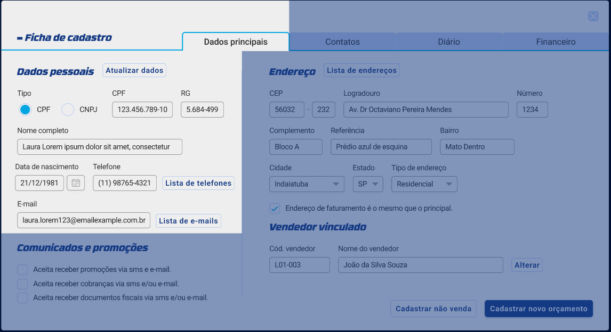
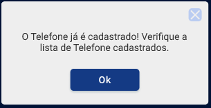
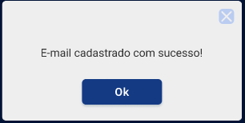
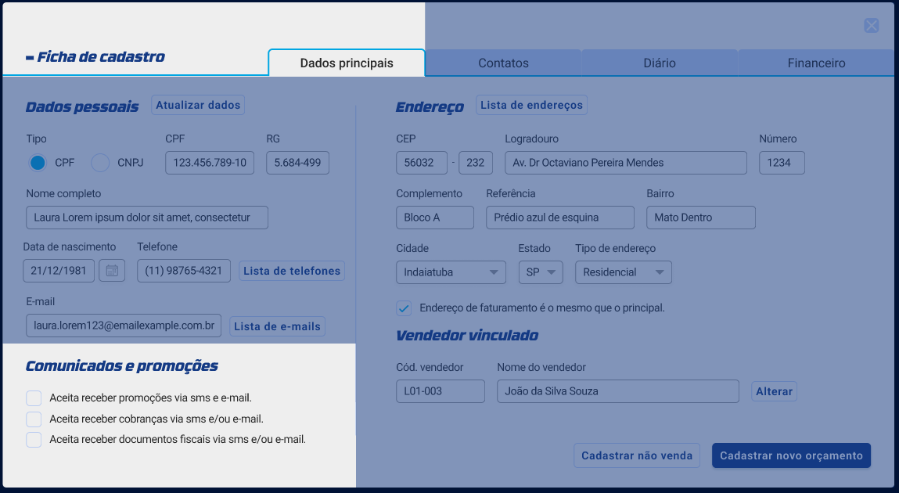
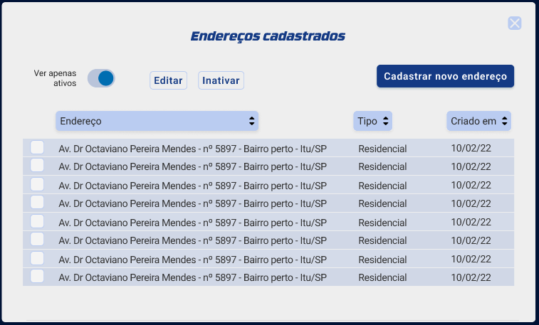
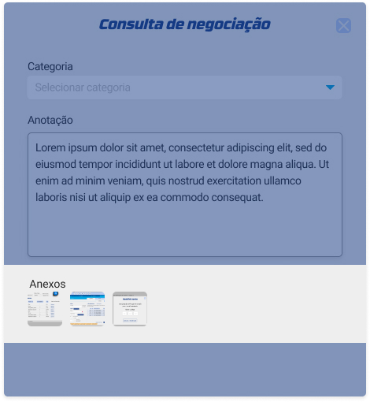

Instrução de Trabalho
{Escreva o Título do Projeto}
| Elaboração | Aprovação | ||||
|---|---|---|---|---|---|
| Nome | Visto | Data | Nome | Visto | Data |
| {Escreva o nome de quem elaborou o projeto} | {Escreva a data do visto de elaboração no formato DD/MM/AAAA} | {Escreva o nome de quem aprovou o projeto} | {Escreva a data do visto de aprovação no formato DD/MM/AAAA} | ||
1. Objetivo
{Escreva o objetivo do projeto.}
2. Referências
{Escreva as referências do projeto.}
3. Definições
{Escreva as definições do projeto.}
4. Procedimentos e Responsabilidades
4.1. Aba clientes
A aba de clientes permite cadastrar clientes no sistema da Auto Geral.
Dentro da aba de clientes, existem as seguintes abas: cadastrar cliente e consultar cliente.
4.1.1. Cadastrar cliente
O cadastro de cliente pode ser realizado através a aba cadastrar cliente exibido na aba principal clientes. No cadastro é possível informar os dados pessoais do cliente, comunicados e promoções, outras configurações e endereço principal.
4.1.1.1. Dados pessoais
A criação de um cadastro tem suas informações alteradas de acordo com o tipo de cliente cadastrado, que pode ser um cliente principal CPF, CNPJ ou um outro comprador CPF ou CNPJ.
4.1.1.1.1. Cliente do tipo CPF
Cliente do tipo CPF tem os seguintes dados pessoais solicitados: CPF, RG, nome completo, data de nascimento, telefone e e-mail.
4.1.1.1.2. Cliente do tipo CNPJ
Cliente do tipo CNPJ tem os seguintes dados jurídicos solicitados: CNPJ, Nº I.E, razão social, segmento, data de fundação, telefone e e-mail.
4.1.1.1.2. Cliente do tipo outro comprador
Cliente do tipo outro comprador tem os mesmos dados do cliente tipo comprador CPF ou CNPJ com acrescimo de: tipo de vínculo.
4.1.1.2. Endereço principal
A seção de endereço principal serve para indicar um endereço do cliente que está sendo cadastrado. Ao preencher o CEP alguns dados como logradouro, número e bairro já são preenchidos automaticamente e a depender da necessidade, é possível preencher esses dados manualmente.
Ainda no endereço é possível definir se o endereço adicionado é o mesmo endereço de faturamento e/ou entrega, para isso, basta acionar a opção clicando na caixa de seleção e confirmando o surgimento de um ícone de check, conforme ilustrado abaixo.
4.1.1.3. Comunicados e promoções
A seção de comunicados e promoções diz respeito às autorizações que o clientes fornece para receber comunicação da Auto Geral respeitando a LGPD. Envio de cobranças, promoções e documentos fiscais podem ser permitidos ou negados pelo cliente e para permitir ou negar, basta realizar o mesmo processo de acionar a opção clicando na caixa de seleção, conforme o item endereço apresentado anteriormente.
4.1.1.4. Outras configurações
Alguns clientes exigem a inserção do número de empenho na nota. Para isso, basta clicar na caixa de seleção, conforme apresentado nos passos anteriores.
Após a inserção dos dados, pode escolher entre apenas cadastrar o cliente ou cadastrar e ir para o orçamento. Essa última opção cria um orçamento já vinculado com os dados de cadastro do cliente.
4.2. Aba lista de clientes
A lista de clientes permite que o vendedor visualize todos os clientes já cadastrados na rede. Para visualizar apenas a lista dos clientes que estão vinculados ao vendedor que iniciou a sessão, para isso, o vendedor pode acessar a lista de clientes.
4.2.1. Consultando um cliente
A aba de consultar cliente fica localizada à direita de cadastrar cliente.
Os clientes podem ser filtrados utilizando a barra de pesquisa geral e os filtros de situação ativa e cidade.
A lista de clientes exibe o código do cliente, nome/razão social, tipo, CPF/CNPJ, cidade, nascimento/fundação, telefone e compras. As colunas podem ser ordenadas de forma crescente (A-Z) ou decrescente (Z-A) e é possível filtrar por apenas clientes ativos ou todos os clientes.
Na lista também é possível alternar entre páginas.
Após clicar em qualquer cliente da tabela, o usuário é redirecionado a um popup que contém todos os dados do cliente, esse popup é chamado de ficha de cadastro e é dividido em quatro partes, que serão detalhadas a seguir.
4.2.2. Ficha de cadastro do cliente
4.2.2.1. Aba dados principais
A primeira aba apresentada na ficha de cadastro é a aba dados principais. Nessa tela o usuário encontra os dados do cliente que foram inseridos durante a criação de seu cadastro.
4.2.2.1.1. Seção dados pessoais
Na seção de dados pessoais, existem três botões: atualizar dados, lista de telefones e lista de e-mails.
4.2.2.1.1.1. Botão atualizar dados
Ao clicar no botão, será possível alterar os dados principais do cliente.
4.2.2.1.1.2. Botão lista de telefone
O botão exibe o popup de telefones cadastrados. Nesse popup o usuário encontra todos os telefones do cliente - sejam eles ativos ou inativos - possibilitando três ações através de botões: editar, inativar e cadastrar novo telefone.
4.2.2.1.1.2.1. Botão editar
Ao clicar é possível editar um telefone.

Após editado o usuário recebe um popup de confirmação.
4.2.2.1.1.2.2. Botão inativar
Ao clicar é possível inativar um telefone, para inativar o usuário tem de clicar na caixa de marcação presente no início da tabela e depois efetuar o clique no botão.O usuário pode optar pela chave que ao clicar mostra apenas os ativos.
4.2.2.1.1.2.3. Botão cadastrar novo telefone
Ao clicar leva o usuário para um popup de cadastro de telefone.
Após clicar no botão cadastrar novo telefone o usuário deve preencher as informações e clicar no botão Cadastrar para efetuar o cadastro.
Após clicar no botão Cadastrar o usuário recebe um popup de confirmação.
Caso o telefone já esteja cadastrado receberá o seguinte popup
4.2.2.1.1.3. Botão lista de e-mails
Após o usuário clicar no botão Lista de e-mails ele é levado a um popup E Mails cadastrados.
Nesse popup o usuário encontra todos os e-mails do cliente - sejam eles ativos ou inativos - possibilitando três ações através de botões: editar, inativar e cadastrar novo e-mail.
4.2.2.1.3.1 Botão editar
Ao clicar é possível editar um e-mail já cadastrado.
Após editado o usuário recebe o seguinte popup de confirmação:
4.2.2.1.3.2 Botão inativar
Ao clicar é possível inativar um e-mail, para inativar o usuário tem de clicar na caixa de marcação presente no início da tabela e depois efetuar o clique no botão.O usuário pode optar pela chave que ao clicar mostra apenas os ativos.
4.2.2.1.3.3 Botão cadastrar novo e-mail
Ao clicar o usuário é direcionado para um popup de cadastro de e-mail.
Após clicar no botão cadastrar novo e-mail o usuário deve preencher as informações e clicar no botão Cadastrar para efetuar o cadastro.
Após clicar no botão Cadastrar o usuário recebe um popup de confirmação.
Caso o e-mail já esteja cadastrado receberá esse popup.
4.2.2.1.2. Seção comunicados e promoções
No canto inferior esquerdo, o usuário encontra a parte de comunicados e promoções onde ele pode marcar na caixa de marcação do conteúdo que o cliente autoriza receber.
4.2.2.1.3. Seção endereço
No canto superior direito o usuário tem acesso ao endereço do cliente, nesta parte tem uma caixa de marcação onde pode tornar o endereço principal o mesmo endereço de faturamento. Conta com um botão Lista de endereços ao clicar o usuário é levado a um popup Endereços cadastrados.
Após o usuário clicar no botão Lista de endereços ele é levado a um popup Endereços cadastrados.
4.2.2.3.1. Endereços cadastrados
O botão exibe o popup de endereços cadastrados. Nesse popup o usuário encontra todos os endereços do cliente - sejam eles ativos ou inativos - possibilitando três ações através de botões: editar, inativar e cadastrar novo endereço.
4.2.2.3.1.1. Editar
Ao clicar é possível editar um endereço já cadastrado.
Após editado o usuário recebe o seguinte popup de confirmação:
4.2.2.3.1.2. Inativar
Ao clicar é possível inativar um endereço, para inativar o usuário tem de clicar na caixa de marcação presente no início da tabela e depois efetuar o clique no botão. O usuário pode optar pela chave que ao clicar mostra apenas os ativos.
4.2.2.3.1.3. Cadastrar novo endereço
Ao clicar leva o usuário para um popup de cadastro de endereço.
Após clicar no botão cadastrar novo endereço o usuário deve preencher as informações e clicar no botão Cadastrar para efetuar o cadastro.
Após clicar no botão Cadastrar o usuário recebe o seguinte popup de confirmação:
Caso o endereço já esteja cadastrado receberá o seguinte popup
4.2.2.1.4. Seção vendedor vinculado
O usuário pode vincular o cliente a algum vendedor, sendo possível alterar o vendedor vinculado clicando no botão Alterar.
4.2.2.5. Atalhos disponíveis
A partir da ficha de cadastro o usuário pode cadastrar não venda a partir do botãoCadastrar não venda ou cadastrar um novo orçamento a partir do botão Cadastrar novo orçamento.
4.2.2.2. Aba contatos
O usuário pode consultar os outros compradores cadastrados no cliente, o usuário pode buscar por um comprador específico clicando na barra de pesquisa pesquisar por basta apenas clicar e digitar, abaixo da barra de pesquisa há uma tabela ao clicar em qualquer linha da tabela que abrirá um popup com os dados do comprador mais detalhado.
Na aba, existe apenas um botão Cadastrar novo comprador. Ao clicar direciona o usuário para a tela de cadastro de comprador.
4.2.2.3. Aba diário
4.2.2.3.1. Seção diário do cliente
Nesta parte o usuário tem acesso ao diário do cliente, contém algumas informações básicas em relação a criação da ficha de cadastro do cliente.
4.2.2.3.2. Seção reclamações
Exibe um histórico de reclamações realizadas pelo cliente.
4.2.2.3.3. Seção devoluções
Exibe um histórico de devoluções do cliente.
4.2.2.3.4. SeçãoNegociação
Exibe um histórico de todas as negociações que o cliente fez com ele ou com outro vendedor.
Para consultar um histórico, basta clicar em algum histórico exibido na lista. Ao clicar, um popup com a negociação mais detalhada será exibido.
A tela de Consulta de negociação possui um filtro por categoria de negociação.
O campo de anotações vem preenchido com as informações da negociação.
Abaixo do campo de anotações tem Anexos que são imagens anexadas durante a negociação.
É possível criar um novo histórico de negociação clicando no botão novo histórico de negociação.
Ao clicar no botão Novo histórico de negociação um popup Novo histórico de negociação é exibido e nele o usuário preenche as informações da negociação, começando pelo filtro o usuário deve clicar e selecionar a categoria.
Após escolher a categoria o usuário deve digitar as informações no campo abaixo, pode ser digitado tudo que for necessário sobre a negociação.
No final o usuário pode anexar imagens da negociação feita com o cliente, para anexar as imagens basta arrastá-las para o campo pontilhado.
Por fim, o usuário deve clicar no botão salvar para a negociação ser salva no histórico do cliente.
4.2.2.4. Aba financeiro
Nessa aba o usuário vai ter as informações sobre a situação financeira do cliente.
4.2.2.4.1. Seção crédito
Nessa seção é possível verificar informações relacionadas ao crédito do cliente, como a situação, limite e créditos existentes.
O usuário pode solicitar crédito clicando no botão Solicitar liberação de crédito.
4.2.2.4.2. Seção histórico do financeiro
O histórico exibe as atualizações do setor financeiro em relação ao cliente.
4.2.2.4.3. Histórico de pedidos
A seção possui três abas: orçamentos, pedidos e não vendas.
Independente da aba navegada, o histórico exibirá uma barra de pesquisa definida como pesquisar por que ao clicar e digitar o usuário permite que o vendedor procure por um orçamento, pedido ou não venda. Além disso, existem dois filtros que podem ser usados individualmente ou combinados: filtro de data e por tipo.
Na tabela existe uma caixa de seleção que ao clicar nela o botão no canto inferior direito é liberado para solicitar devolução que permite iniciar a devolução levando para as telas de devolução, ao clicar na linha de um pedido na tabela o pedido abre e mostra os status, podendo solicitar devolução por lá e se o pedido ainda não saiu pode fazer alteração de endereço.
Nota: apenas a aba de pedidos possui o botão de solicitar devolução, as demais abas não possui botão.
Um botão ver métricas está localizado ao lado do título e ao clicar exibe um popup de métricas relacionadas a produtos e pedidos.
Nessa tela o usuário pode consultar algumas informações do cliente com qual produto mais compra, visão geral dos pedidos e com um botão no final Enviar Métricas que ao clicar as métricas são enviadas ao cliente.
5. Registros
6. Histórico de Revisões
| Revisão | Descrição | Revisor | Data |
|---|---|---|---|
| 00 | {Escreva a descrição da revisão} | {Escreva o nome do Revisor} | {Escreva a data da revisão no formato DD/MM/AAAA} |